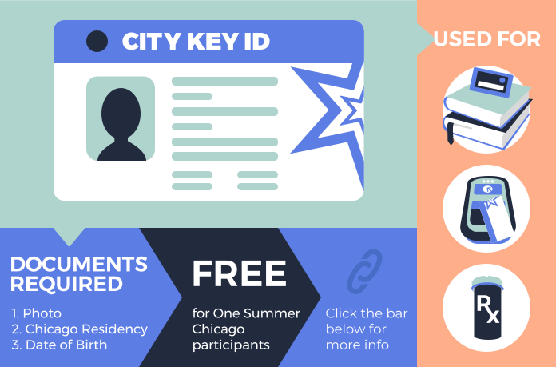

Requested for employment, college, opening a
bank account, travel and more. (A driver’s license
serves in place of a state ID for people who have them.)
To get a state ID, individuals most often bring their social
security card, birth certificate AND a transcript or report card
(with address) or utility bill. (In order to get a Real ID, for
domestic travel without a passport, many students bring a current
letter from their school or a report card (with address) for a
second form of proof of address.)
Your state will likely charge you a small fee to get a state ID.
Visit your state’s Secretary of State website to view a list of
documents needed or
find locations.

It is also a library card, Ventra card and Chicago Rx card &
generally not accepted for travel or employment.
You must present three (3) documents to get City Key including, a
document displaying your photo, your date of birth and your
residency in Chicago.
Is often a required document for getting a bank account and is
also often needed for employment or to get other identification
like a state ID.
Some banks accept an
ITIN
card. If you are not eligible for a Social Security card, ask your
employer or bank if other forms of ID like an ITIN card are
accepted.
If you do not have a social security card, you can request a new
or replacement card for free.
You will need documents to prove your identity, birthdate and
immigration status.